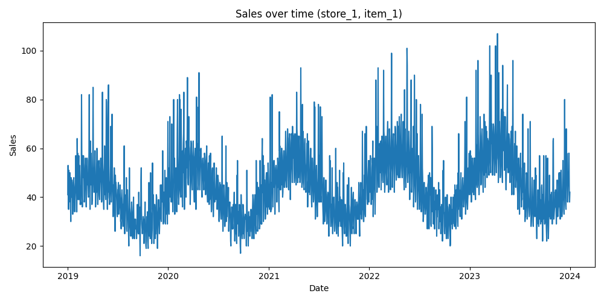

This report analyzes how sales evolve over time for a specific store-item pair.

Sales growth combined with seasonal patterns indicates stable but evolving demand. External events such as promotions likely influence spikes.
Demand is influenced by trend, seasonality, and irregular events. A comprehensive forecasting approach is required.